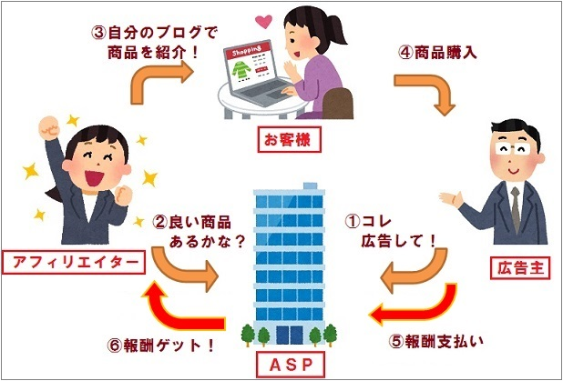

1から説明！初期費用0で稼ぐ方法
基本的にアフィリエイターは皆、レンタルサーバとドメイン取得をすることで初期費用が3000～5000円ほど必要になります。
多くのウェブサイトでは紹介料をもらうためにこの方法を紹介しているのですが、すこし知識を身につけるだけで無料でサイトを
公開して、初期費用0でアフィリエイト収益を出せる、裏技があるのです。
この方法はプログラマーの中では有名ですが、多くの人は知らないと思うので今回紹介します。
アフィリエイトの仕組みとは

アフィリエイトは広告を掲載する「アフィリエイター」、広告を提供する「企業(広告主)」、広告を読む「読者(ユーザー)」
の三者によって成立する、インターネット広告のひとつです。
まずアフィリエイターが、自分の運営するWEBサイトやブログなどに企業から提供された広告を掲載します。
こうしたWEBサイトやブログなどを訪れた読者により、広告を通じた商品購入やサービス契約があったとき、
広告主から報酬が支払われることになります。
このようにアフィリエイトの仕組みがわかれば、アフィリエイトで稼ぐために必要なものがなにか、わかってきます。それは
- サイトに貼り付ける広告
- ウェブサイト
- 集客のできる情報
広告主（企業）の見つけ方
アフィリエイトを始める人の多くはどうやって広告をもらうのか？と考えるでしょう。
これは意外に簡単に契約できます。
それはASPと呼ばれる、広告紹介サイトに登録すること！
これに無料登録することで無料で広告をもらい続けることができます。
無料でできるので以下のリンクから早速登録してみましょう。
無料でサイトを公開する方法
ここからがこのサイトの本番です。
無料でサイトを公開する為に必要な知識とはズバリ、プログラミング言語をちょっと勉強することです！
なぜプログラミング言語を学ぶ必要があるかというと、これを学ぶことでプログラマーが使う無料のサーバーで
サイトを公開できるようになるからです。
ではどれくらい勉強が必要なのかと思う人もいるでしょう。これは個人差もありますが、約1～2日ほどでマスターできる
内容です。
その言語とはhtml,cssです。youtubeで調べれば無料で6時間ほどの学習で習得できるのでやってみましょう。
サイト公開2
ここまでの内容からサイトのコーディングもおわり。あとは公開するだけという状態になったと思います。
ついに前章で言った無料のサーバーを教えます。それは・・・
”Git hub" です！
git hubでサイトを公開する方法は次のサイトを見てください。
集客を増やす方法
ここまで来たらもう検索をしたら出てくるとおもってはいけません
。
safariなどでは検索で出てくることもありますが、googleでは検索で出てこないと思います。
そこで必要なのが独自ドメインの取得です。
これについては別のサイトで説明します。